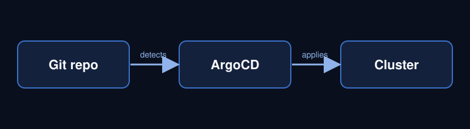
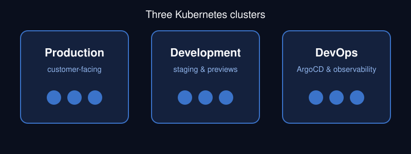
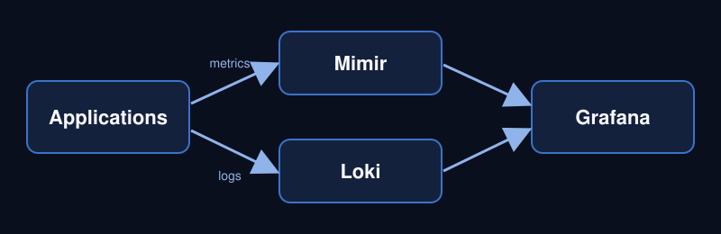

Gonzalo Seriche
Cloud & Platform Engineer
Cloud & Platform Engineer
I design, run and troubleshoot cloud infrastructure. My work covers Kubernetes on Google Cloud, GitOps delivery and observability, and I also support enterprise workloads on AWS.
Find my course code on GitHub.
Shoplift
I operate production, development and platform clusters on Google Kubernetes Engine, keep deployments in sync through GitOps, and manage secrets from a central store.
CR Software
I support enterprise customers on AWS container services, including thread dump analysis on ECS nodes to find slow or stuck Java processes.



Illinois Institute of Technology, in progress
HTML, CSS, JavaScript and the Foundation framework.